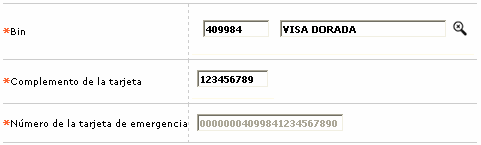

Generación manual de tarjetas de emergencia
Este formulario tipo wizard de dos páginas, se invoca desde la opción generación tarjetas de emergencia, cuando en el campo Administración tarjetas emergencia, de la opción Parámetros operativos se ha definido como valor Manual, le permite a la entidad hacer la generación de los números de tarjeta requeridos para los diferentes bines.
Cada vez que se va a generar un número de emergencia manual, el sistema revisa la cantidad de tarjetas de emergencia parametrizados para cada bin y lo compara contra la cantidad de tarjetas actuales no asignadas para determinar si debe o no permitir la inserción del registro.

Descripción de campos
Bin |
Campo obligatorio con lista de valores de la cual se selecciona el bin para el que se desea generar un número de tarjeta de emergencia. |
Complemento de la tarjeta |
En este campo obligatorio, de longitud variable, se digita el número que conjuntamente con el bin y el dígito de chequeo calculado por el sistema van a conformar el nuevo número de tarjeta de emergencia a generar. El sistema valida la longitud del número de tarjeta y le resta la longitud del bin y la del dígito de chequeo para determinar cuantos dígitos hacen falta para completar el número de la tarjeta. |
Número de la tarjetas de emergencia |
Campo obligatorio. Una vez ingresado el bin y el complemento, el sistema calcula el dígito de chequeo y despliega en este campo el nuevo número de tarjeta de emergencia. |
Después de ingresados los datos y al grabar el registro, el sistema valida que el nuevo número a generar no sea igual con el de ninguna otra tarjeta de emergencia, ni con el de cualquiera de las tarjetas existentes en la base de datos. Una vez que finaliza el proceso, al regresar al formulario Tarjetas de emergencia el usuario podrá consultar el nuevo número de tarjetas de emergencia generado para el bin.